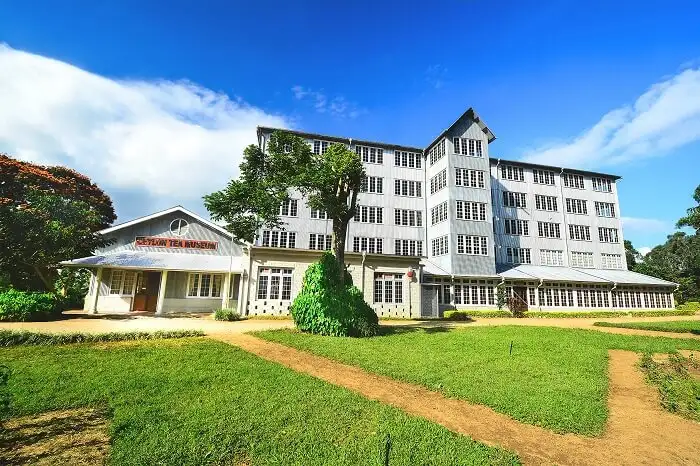

The Ceylon Tea Museum is situated at the former Hantana Tea Factory which was built in 1925, located at the southern side of Kandy, Sri Lanka. Hantana was one of the first areas which successfully opened up the tea cultivation after the failure of the coffee enterprise. The factory that now houses the Museum is a relatively modern building. Abandoned for more than a decade, it was recently revamped and has a good collection of exhibits on the tea pioneers James Taylor and Thomas Lipton. The Tea Museum is a building which consists of four floors where from ground floor to second floor is the old machineries, library and auditorium. While on the third floor the tea lovers can purchase and taste the flavors of Sri Lankan tea. And on the fourth floor one can enjoy the captivating view of the hills while sipping their favourite tea without paying any penny. The building is full of original machinery like the iconic “Little Giant Tea Roller” which twists the dried tea leaves into spirals for cutting. There are also archival prints of 19th century industry which also includes the life and works of the tea pioneer James Taylor. The factory is a pleasant three-wheeler ride up from Kandy and is well worth a visit. Kandy is a mandatory stop on every traveller’s itinerary and the location of the Ceylon Tea Museum at Hantana enhances the attraction of the hill country to the viewers. Also, its at a convenient distance to the Peradeniya Botanical Gardens and Loolecondera estate where tea was first grown commercially in Sri Lanka makes Hantana the perfect location.
